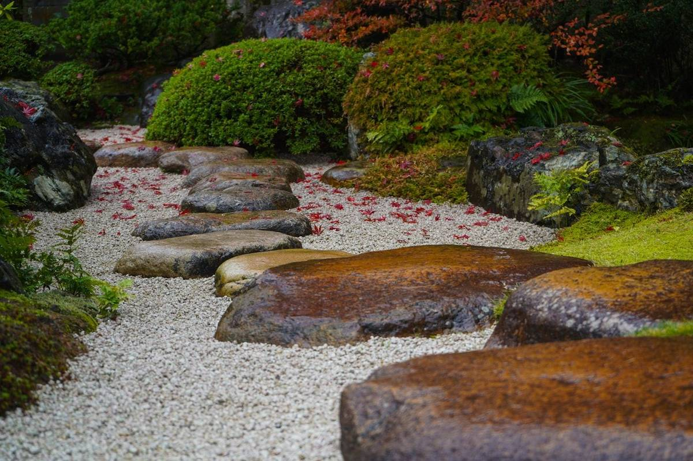
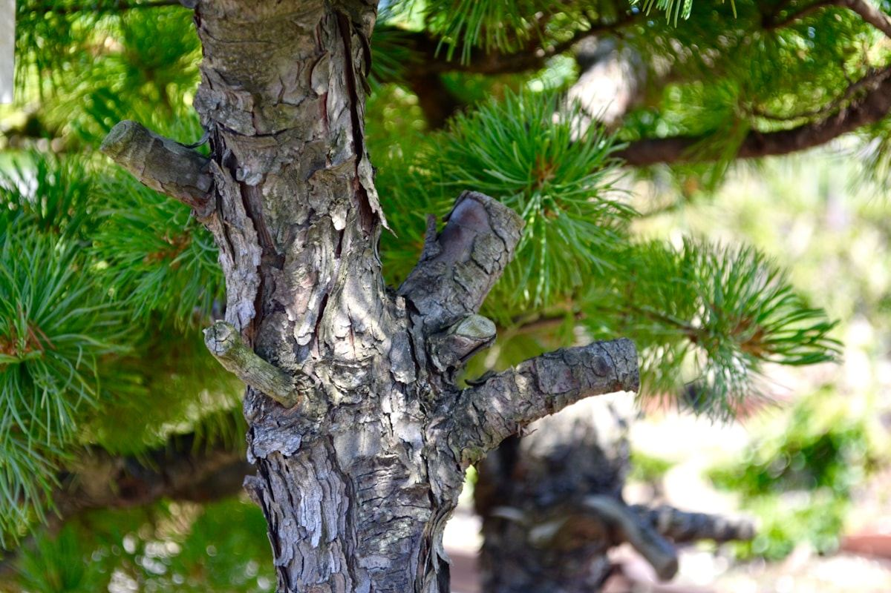
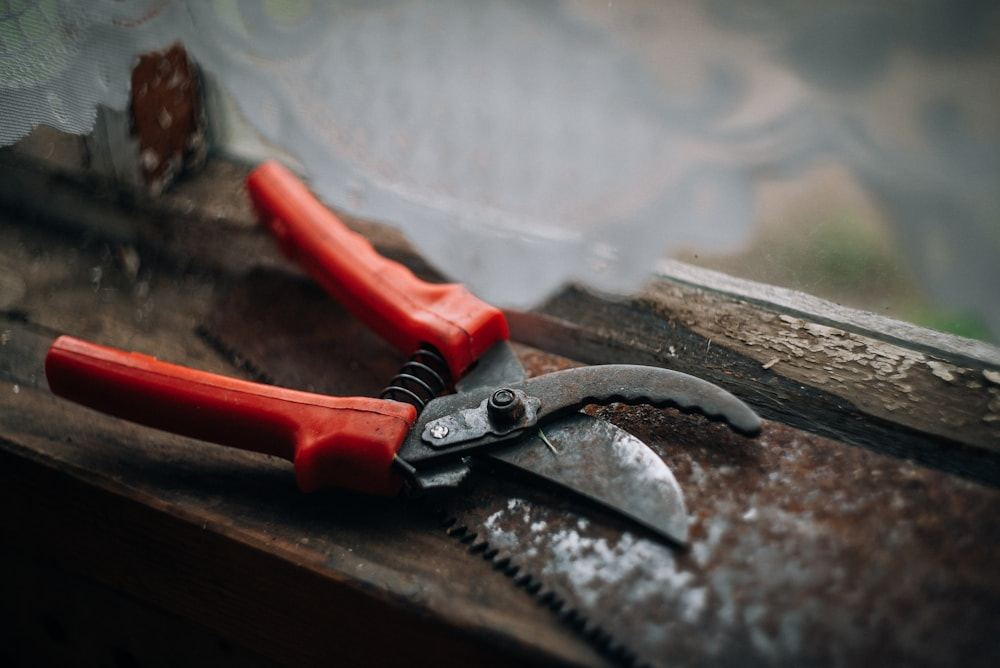
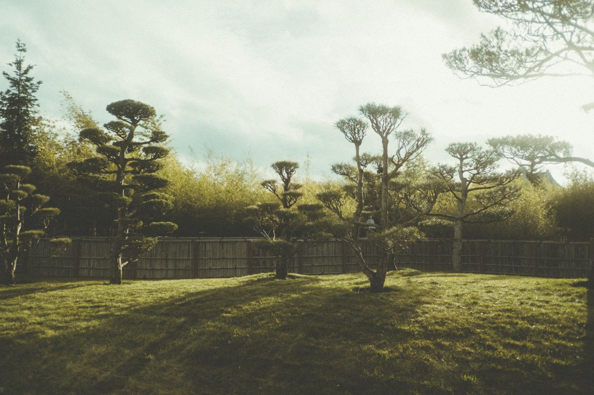
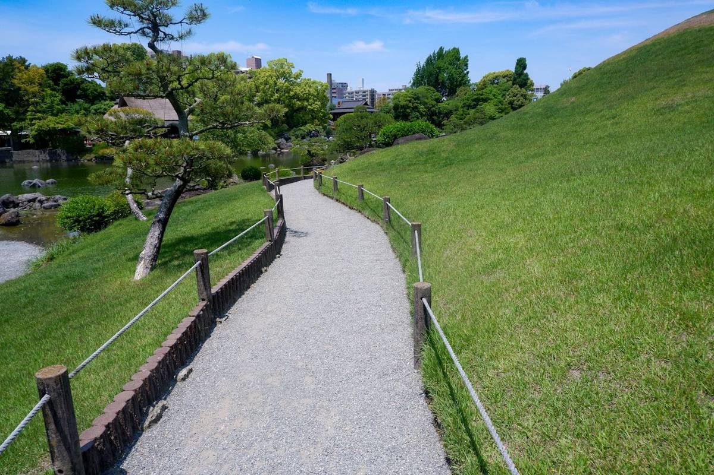
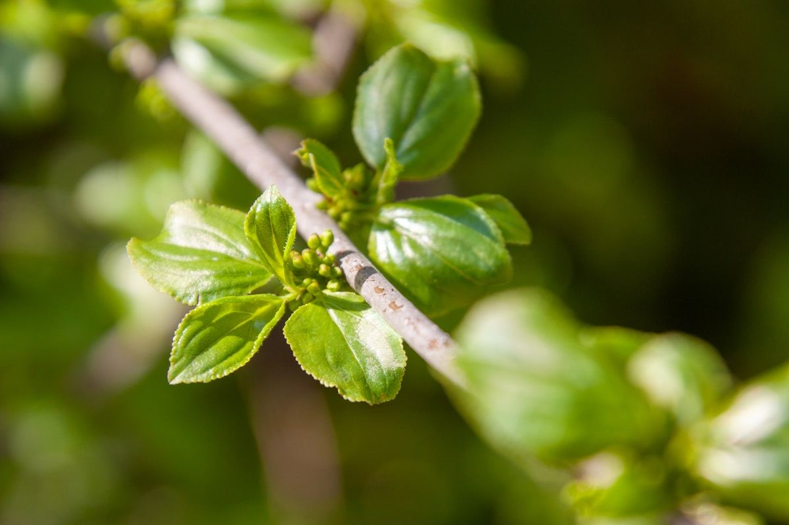
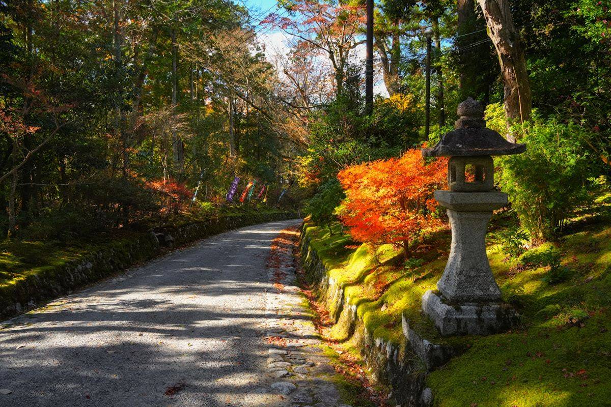
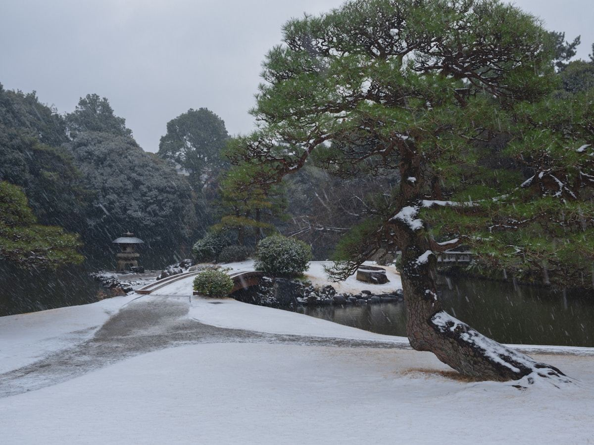

01
庭園の築造
庭をつくる仕事です。石を据え、木を植え、通り道をとる。図面の上ではなく、その土地の日当たりと水はけを見ながら決めていきます。
※画像はイメージです
ABOUT
木は毎年伸びます。去年と同じ形に見える庭も、そのままにしておけば数年で姿が変わります。造園の仕事は、一度つくって終わりではなく、伸びた分をどう納めるかを毎年考え続けることです。
はるき造園は、埼玉県ふじみ野市大井で造園工事を営んでいます。庭園・公園・緑地の築造から、植栽、庭木の伐採と移植、緑地の管理まで、埼玉県知事の建設業許可（第052675号）を受けてお引き受けしています。


WHAT WE DO
埼玉県知事の建設業許可を受けた造園工事業として、
次のようなお仕事をお引き受けしています。

01
庭をつくる仕事です。石を据え、木を植え、通り道をとる。図面の上ではなく、その土地の日当たりと水はけを見ながら決めていきます。

02
木を植える仕事と、木を抜く・動かす仕事。大きくなりすぎた木をどうするかは、切る以外の道もあります。屋上の緑化もこの区分です。

03
公園や緑地をつくる仕事と、つくったあとを見ていく仕事。植えて終わりにならないのが、緑地の管理という区分です。
上に挙げたのは、建設業許可の登録内容にある区分です。
ここに書かれていないことでも、庭のことでしたらまずはお電話でご相談ください。
FOUR SEASONS
庭は一年のうちで姿を変えます。
植えて終わりにならないのは、季節ごとに庭の状態が変わるからです。

※画像はイメージです春
新芽の出方に、その木が冬をどう越えたかが出ます。庭が一年でいちばん動く時期です。
夏
枝が伸び、葉が重なって、内側まで日と風が届きにくくなります。庭がいちばん手のかかる季節です。

※画像はイメージです秋
葉が色づき、やがて落ちます。落ちてはじめて、その木がどう枝を伸ばしてきたかが見えます。

※画像はイメージです冬
葉が落ち、雪がのると、幹と枝の形がそのまま出ます。来年どこへ伸びるかは、この形から決まっていきます。
木の一年に、こちらが合わせる。
※画像はイメージです
COMPANY
| 商号 | 有限会社はるき造園 |
|---|---|
| 代表者 | 塩野 春喜 |
| 所在地 | 〒356-0053 埼玉県ふじみ野市大井1-9-13 |
| 電話 | 049-261-5441 |
| 建設業許可 | 埼玉県知事許可 第052675号 |
| 資本金 | 300万円 |
| 事業内容 | 造園工事／庭園・公園・緑地の築造／植栽工事／庭木の伐採・移植／緑地管理／屋上緑化 |
CONTACT
庭のことでお困りでしたら、
お電話ください。
木を見てからでないと分からないことが多いので、
まずは状況をお聞かせいただければと思います。
受付時間・定休日は、お電話にてご確認ください。